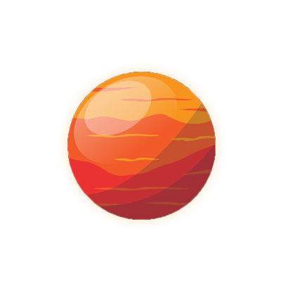

| EQUATORIAL DIAMETER | 6 792 km |
| MEAN DISTANCE FROM SUN | 229 M KM |
| ROTATION PERIOD | 1.03 DAY |
| SURFACE GRAVITY | 3.7 M/S^2 |
| SURFACE TEMPRATURE | -63°C |
Mars is the fourth planet from the Sun and the second-smallest planet in the Solar System, being larger than only Mercury.
Its surface is rocky, with canyons, volcanoes, dry lake beds and craters all over it. Red dust covers most of its surface. Mars has clouds and wind just like Earth. ... Mars' large storms sometimes cover the entire planet.
Mars and Earth share a similar angle of axial tilt - Mars at its present 25 degrees, and Earth at a fairly constant 23.5 degrees. During the past ten million years, Earth's axial tilt has only varied between about 22 and 24.5 degrees, because our relatively large Moon helps maintain a stable tilt.
It's made of iron, nickel, and sulfur. Surrounding the core is a rocky mantle between 770 and 1,170 miles (1,240 to 1,880 kilometers) thick, and above that, a crust made of iron, magnesium, aluminum, calcium, and potassium. This crust is between 6 and 30 miles (10 to 50 kilometers) deep.